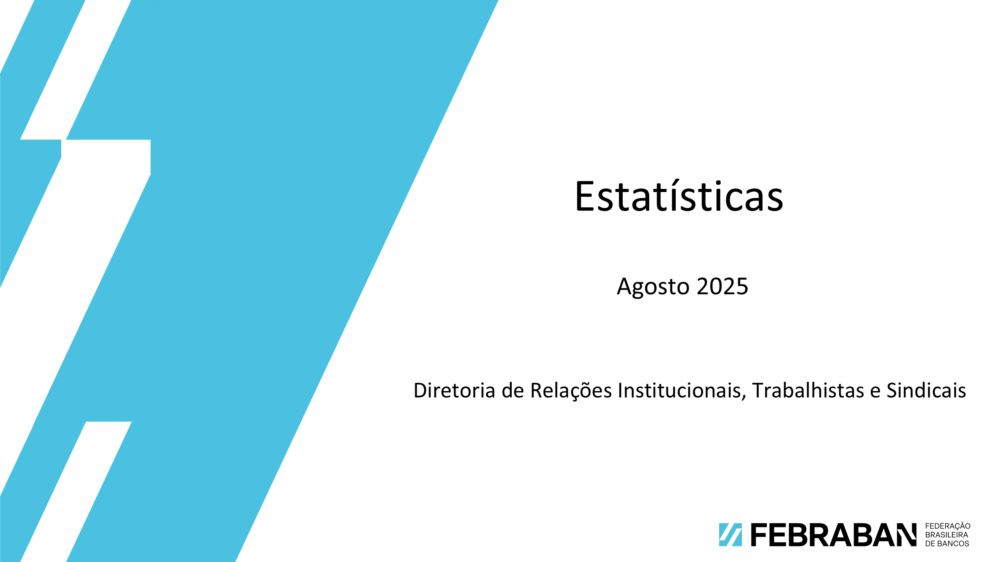

← Voltar à Página Inicial

Ocupações em Tecnologia no Setor Bancário
34º Encontro de RH e Trabalhista do Setor Bancário
Relatório 3 - Em Construção
Relatório 4 - Em Construção
Ocupações em Tecnologia no Setor Bancário
34º Encontro de RH e Trabalhista do Setor Bancário
Em construção...
Relatório 3
Em construção...
Relatório 4
Em construção...